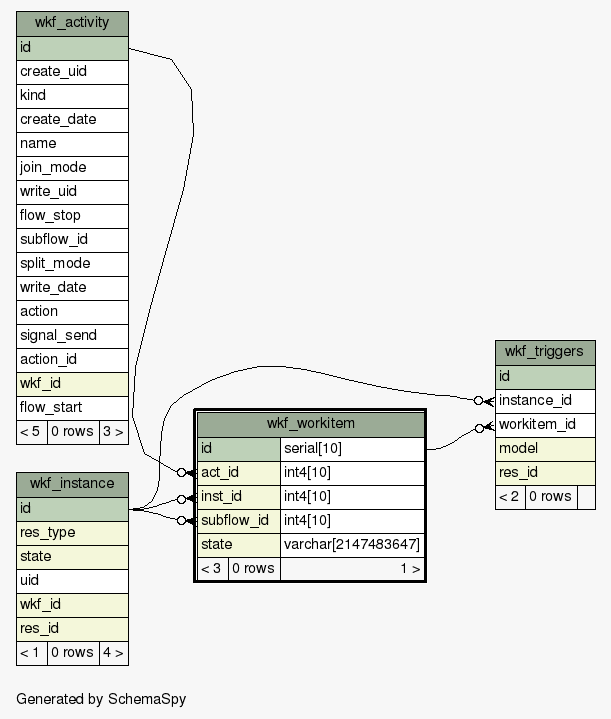
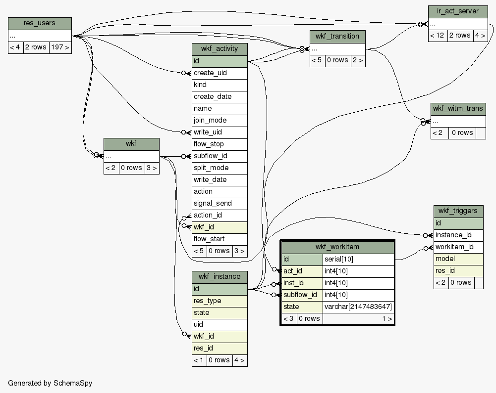

| Table esquema_base.wkf_workitem workflow.workitem
|
Generated by SchemaSpy |
| ||||||||||||||||||||||||||||||||||||||||||||||||||||||||||||||
Table contained 0 rows at sáb dic 26 11:55 VET 2015 | ||||||||||||||||||||||||||||||||||||||||||||||||||||||||||||||
Indexes:
| Column(s) | Type | Sort | Constraint Name |
|---|---|---|---|
| id | Primary key | Asc | wkf_workitem_pkey |
| act_id | Performance | Asc | wkf_workitem_act_id_index |
| inst_id | Performance | Asc | wkf_workitem_inst_id_index |
| state | Performance | Asc | wkf_workitem_state_index |
| subflow_id | Performance | Asc | wkf_workitem_subflow_id_index |
|
  |